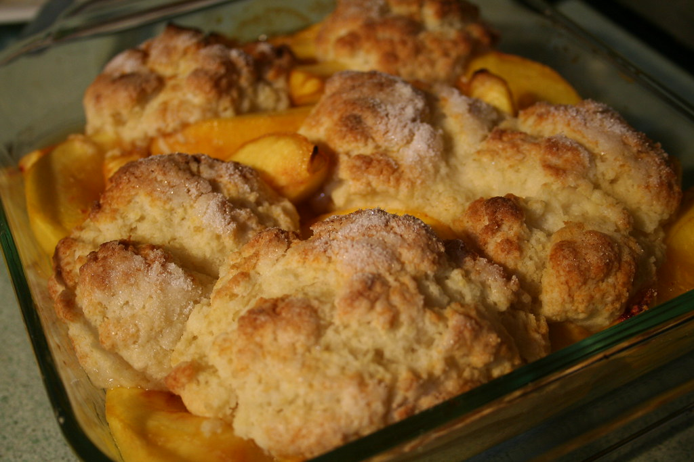

Peach Cobbler Recipe

Home
Description
A (slightly) healthier peach cobbler recipe using half-allulose half-sugar, with browned butter.
Ingredients
- 900 g sliced peaches
- 25 g granulated sugar
- 25 g allulose
- 15 g lemon juice
- 57 g salted butter
- 125 g all-purpose flour
- 75 g granulated sugar
- 75 g allulose
- 12 g baking powder
- 1 g salt
- 240 g whole milk
- Optional: 5–10 g sugar (topping)
Instructions
- Preheat oven to 190°C (375°F).
- In a 10-inch cast iron skillet, brown 57 g butter over medium heat until golden and nutty. Remove from heat.
- In a saucepan, combine peaches, 25 g sugar, 25 g allulose, and 15 g lemon juice. Simmer 5-7 min until soft.
- In a mixing bowl, whisk together flour, 75 g sugar, 75 g allulose, baking powder, and salt. Add milk and whisk until smooth.
- Pour batter evenly over browned butter. Do not stir.
- Spoon peach filling with juices evenly over batter. Do not stir.
- Sprinkle 5-10 g sugar on top (optional).
- Bake for 30-35 min, checking at 28. Tent with foil if edges darken too quickly.
- Let rest 10-15 min before serving to allow center to set.